Jiali Cui
Senior Research Scientist
Futurewei Technology
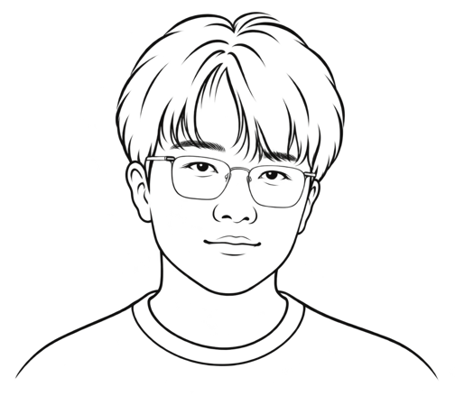
Research interests
I study probabilistic generative models that can understand the world.
- Latent variable generative models
- Energy-based models
- Diffusion models
- Multimodal learning
Education
-
Ph.D. in Computer ScienceStevens Institute of Technology2021–2026
-
M.S. in Computer ScienceStevens Institute of Technology2019–2021
-
B.S. in Computer ScienceHarbin Institute of Technology2015–2019
Publications
2026
-
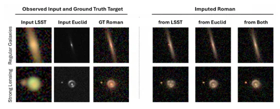
-
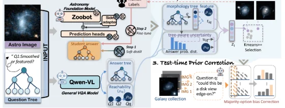
-
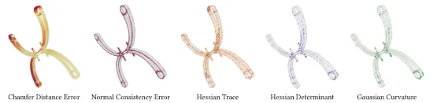
-
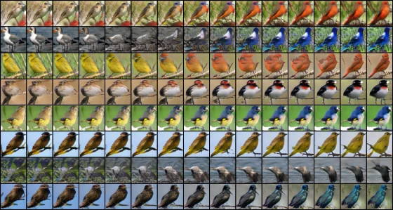
-
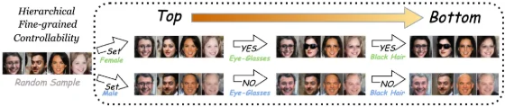
-
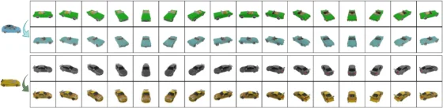
2024
-
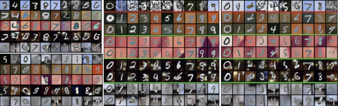
-
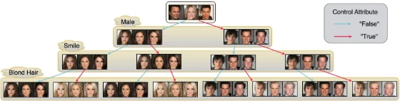
2023
-
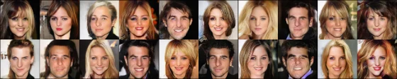
-
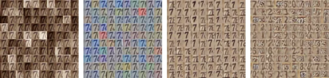
-
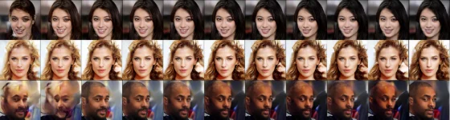